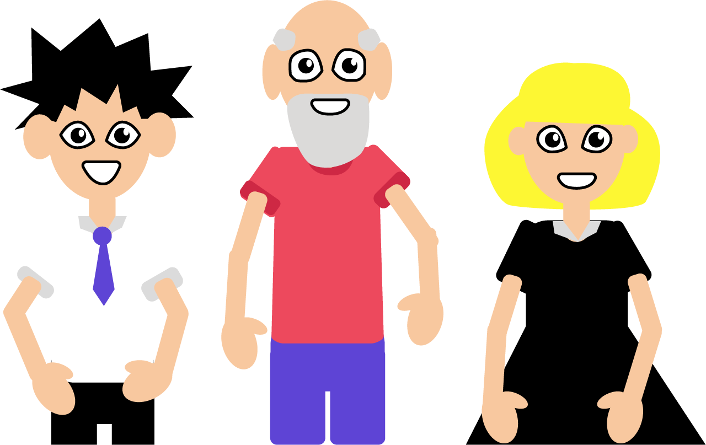
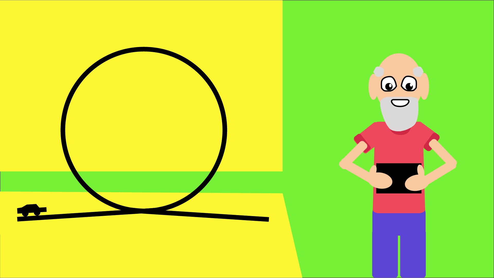

About This Project
This website proposes a new teaching and learning framework, that can be accessed online.
This website proposes a new teaching and learning framework, that can be accessed online.
There is lots of information on how people learn but it has not been translated into a practical, structured resource for teachers.
POWS Learning is 4 key elements that make up a great lesson: Pictures, Objects, Words and Stories.
These four areas cover the main ways people take on new information.

POWS is a resource for teachers to help them teach in different ways.
POWS Learning works by being an online lesson planning resource, created by the community.
